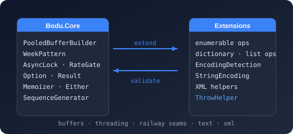

Namespace Bodu.Collections.Generic.Extensions

Purpose
Bodu.Collections.Generic.Extensions holds the sequence-shaping helpers for IEnumerable<T>, IList<T>, and IDictionary<TKey, TValue> — recursive selection, batched enumeration, sliding windows, and pluggable randomness-driven shuffles.
Key types
- IEnumerableExtensions — generic enumerable utilities:
Aggregate,Batch,Cache,ContainsAll,ContainsAny,ForEach,Index,IsNullOrEmpty,Randomize,RecursiveSelect,WhereNotNull, and more. - IListExtensions — list-specific utilities:
IndexOf,LastIndexOf,ReplaceAll,TryMove,TrySwap. - IDictionaryExtensions — dictionary utilities:
AddOrUpdate,GetOrAdd. - ShuffleHelpers, SystemRandomAdapter, RandomizationMode — pluggable randomness-driven shuffles backed by IRandomGenerator.
Tip
Looking for sequence producers — Range, NextWhile, or named series such as Fibonacci? Those live on SequenceGenerator in the dedicated Bodu.Sequences namespace.
Example
using Bodu.Collections.Generic.Extensions;
// Batched enumeration over an IEnumerable<T>.
foreach (IEnumerable<int> batch in Enumerable.Range(0, 100).Batch(size: 16, selector: static x => x))
Process(batch);
// Recursive selection.
IEnumerable<DirectoryInfo> allDirs = root.EnumerateDirectories()
.RecursiveSelect(d => d.EnumerateDirectories());
Notes
- Lazy where possible. Helpers like
Batch,RecursiveSelect, andCacheare lazy. Materialise toToList()/ToArray()when you need a stable snapshot. - Argument validation. Every public extension method validates its arguments via ThrowHelper.
- Packaging. This extension namespace ships in the
Bodu.Corepackage; the concrete collection types in the siblingBodu.Collections.*namespaces ship in theBodu.Collectionspackage, except the thread-safeBodu.Collections.Generic.Concurrentvariants, which ship inBodu.Collections.Concurrent. - See also: the Bodu.Core introduction, the companion Bodu.Collections.Extensions namespace, the Bodu.Sequences sequence generators, the Bodu.Extensions date / numeric / string extension surface.
Classes
IDictionaryExtensions
Provides retrieval-and-mutation helpers for IDictionary<TKey, TValue> — get-or-add and add-or-update operations modelled on the ConcurrentDictionary<TKey, TValue> surface but available on any dictionary implementation.
IEnumerableExtensions
Provides deferred-execution combinators over IEnumerable<T> — batching, caching, multi-aggregate fan-out, recursive descent, randomization, and set-membership predicates — that complement the standard LINQ surface for production pipeline code.
IListExtensions
Provides extension methods that add predicate-based search, safe relocation, and bulk replacement operations to any type implementing IList<T>.
SystemRandomAdapter
Adapts a Random instance to the IRandomGenerator interface.
Enums
RandomizationMode
Specifies the available strategies for randomizing a sequence.